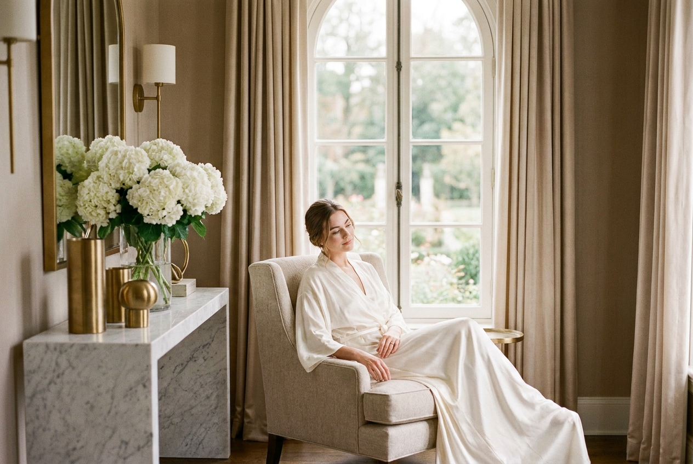
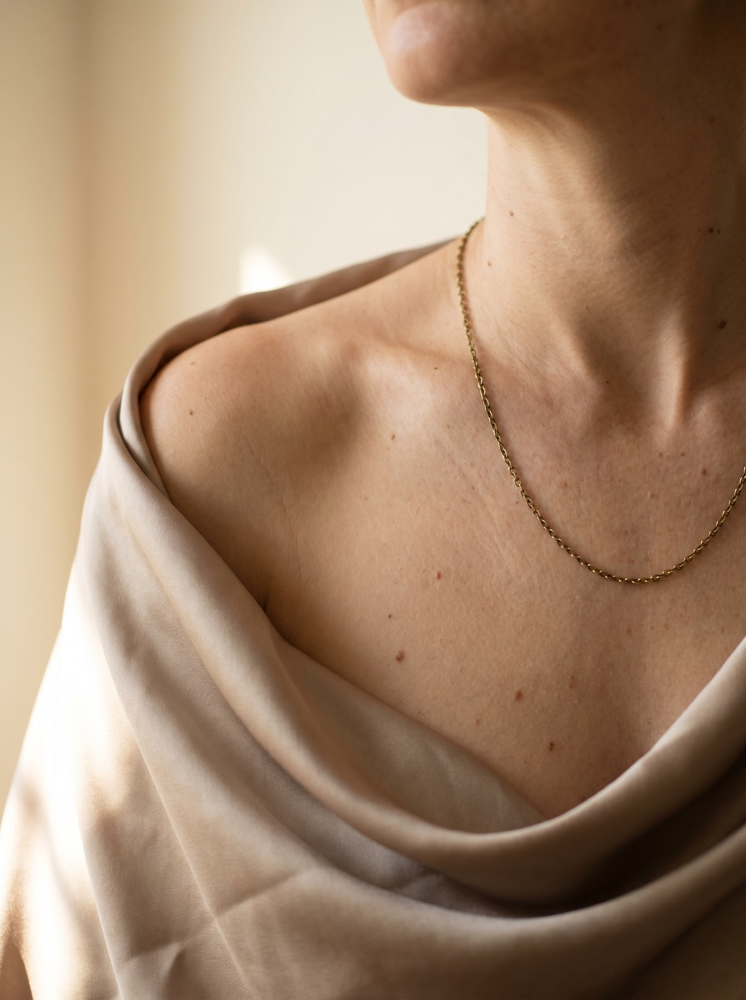
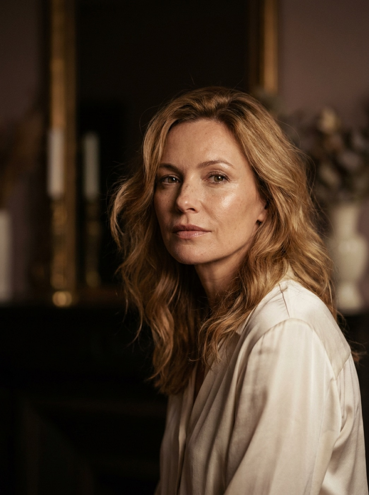
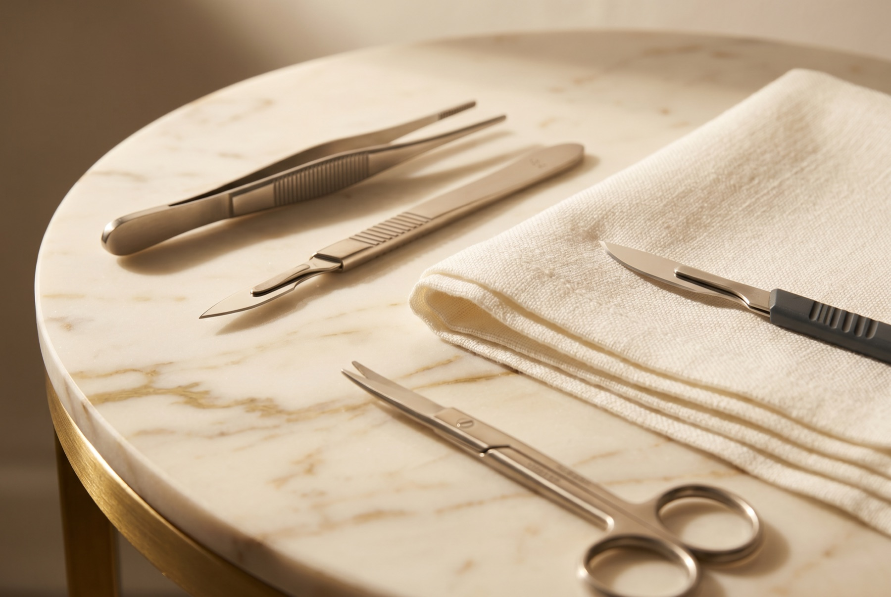

Considered surgery,
beautifully balanced.
Whether you are restoring your body after weight loss or pregnancy, refining your shape, or seeking expert facial, eyelid and skin-cancer reconstruction, every plan is drawn up individually, with Mr Vijayan's artistry and consultant-led care at its heart.
No two bodies, faces or goals are the same, so no two plans are. Mr Vijayan studies each case holistically and explains, honestly, what surgery can and cannot achieve.
Reveal the
physique beneath.
A particular focus of the practice: restoring the body after pregnancy or significant weight loss by refining loose, redundant skin and re-defining a natural, proportioned shape.
Enquire about body surgery →
BreastProportion,
comfort, balance.
From reduction and uplift to augmentation and reconstruction, Mr Vijayan plans breast surgery around your frame and your wishes, for results that feel as natural as they look.
Enquire about breast surgery →
Face & EyesRefreshed, never
rearranged.
Facial and eyelid surgery designed to soften the signs of time while keeping every feature unmistakably yours, subtle, rested and naturally in keeping with your face.
Enquire about facial surgery →Expert care for
skin and lesions.
From mole and lesion checks to skin-cancer removal and reconstructive work, Mr Vijayan brings reconstructive precision to results that heal discreetly and beautifully.
Enquire about skin surgery →What to expect
- 01
Enquiry
A simple message or call to begin the conversation.
- 02
First consultation
20–30 unhurried minutes to listen, assess and explore your goals.
- 03
Written plan
A thorough letter summarising the approach, recovery and risks.
- 04
Second consultation
Included as standard, to recap, answer questions and confirm.
- 05
Surgery
Performed by Mr Vijayan with a senior surgical assistant.
- 06
Aftercare
A day-one call and unlimited, consultant-led follow-up.

Not sure which procedure is right?
That is exactly what a consultation is for. Tell Mr Vijayan what you'd like to achieve and he'll give you an honest, expert view.
Request a Consultation